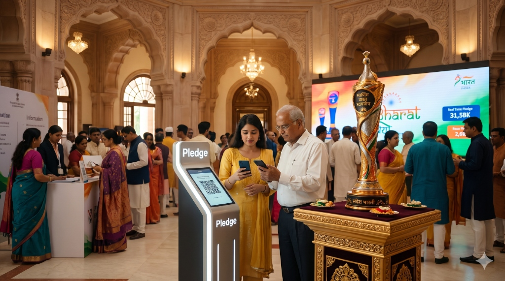

Three Ways Every Indian Joins In
जन भागीदारी के ३ दिव्य स्तम्भ — Not an observance, but an unstoppable awakening.
From the southern shores of Kanyakumari to the Himalayan peaks of Ladakh, स्वर्णिम भारत उदयघोष translates abstract national destiny into personal citizen duty. Choose your path of active dedication below.

Select Your Vehicle of Service
Every citizen carries an irreplaceable stroke in the master canvas of 2047. Whether through footsteps, sacred vow, or cultural voice.
The Relay: Bharat on the Move
From Kanyakumari to New Delhi, across 28 states and 3 UTs, led by honorary Ambassadors via a custom mobile unit. Discover physical pledges sealed within the Sandesikha baton.

The Pledge: Every Voice Counts
A frictionless mobile app and QR ecosystem. One scan, one promise—every citizen's pledge lights up the city's LED wall and generates verified digital certificates.
The Anthem: Bharat Through Your Lens
The #UnseenIndia citizen-led content engine. Citizens share unseen places, people, and sounds, with clips woven directly into the national anthem film.